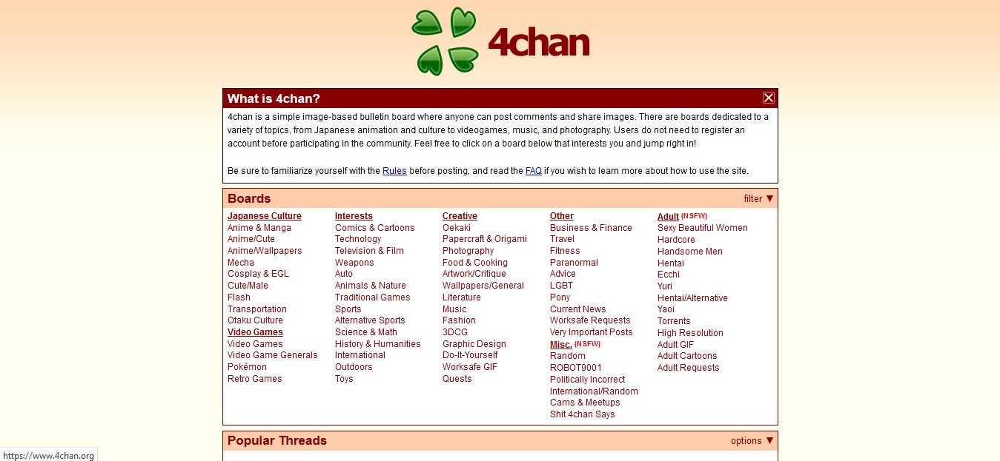
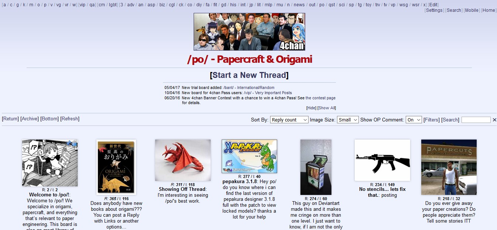
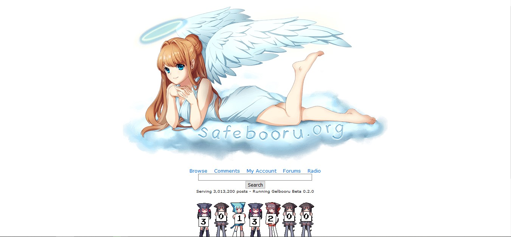
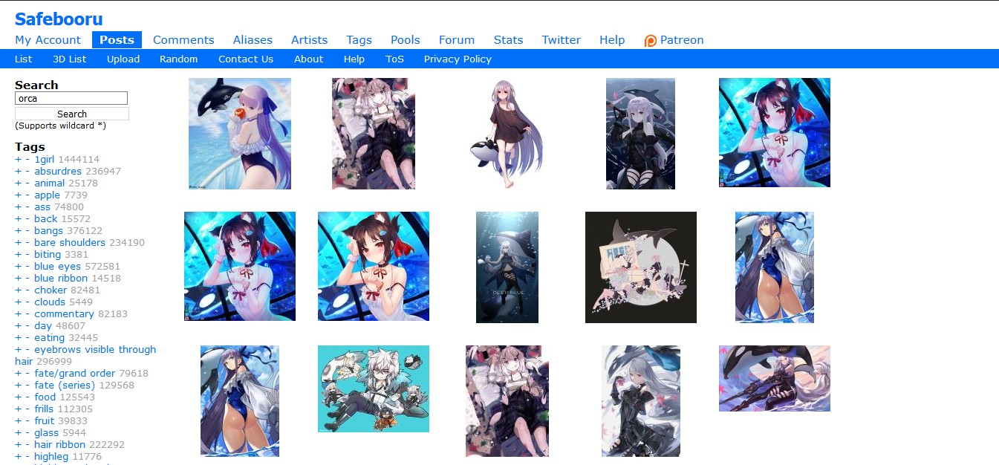

Merupakan sebuah jenis Internet forum yang kegiatannya berkisar pada mengunggah gambar, biasanya diiringi
teks penjelas atau diskusi.
Imageboard memiliki karakteristik yang mirip dengan bulletin board system, dalam hal ini membahas berbagai
topik. Perbedaan mencolok imageboard adalah, diskusi ini tidak difokuskan dalam bentuk teks saja, melainkan
dapat disisipi gambar
atau bahkan berpusat pada gambar. Perlu ditekankan bahwa gambar disini biasanya bukan buatan pengguna
imageboard, melainkan diambil dari sumber lain seperti : online-gallery, imageboard lain, atau hasil edit dari
gambar
Latar Belakang
Imageboard pertama dibuat di Jepang, awalnya diperuntukkan sebagai perluasan dari konsep Textboard.
Imageboard menjadi populer karena prinisip anonimity yang diterapkan dalam imageboard berarti penggunannya
dapat melakukan apapun disana
tanpa takut identitasnya terbongkar.
Deskripsi
Berbagai imageboard yang ada di Internet, secara garis besar dapat dikelompokkan menjadi 2 jenis imageboard,
yaitu Futaba Channel clone dan Danbooru-style board.
Futaba Channel clone
Futaba Channel atau lebih dikenal sebagai 2chan (jangan samakan dengan 2channel) merupakan textboard yang
populer di Jepang. Futaba Channel mengkategorikan konten atau diskusi dalam hierarki topik. Hierarki ini
biasanya dilambangkan dengan
"/" seperti /pol untuk politik. Beberapa imageboard mengadopsi pendekatan Futaba Channel ini yang kemudian
dinamakan "linearly directed imageboards". Contohnya meliputi 2channel, 4chan dan 8chan.
Danbooru-style board
Biasa disebut booru, Danbooru-style board tidak menggunakan model seperti Futaba Channel. Konten dalam
Danbooru-style board disajikan dalam struktur non-hierarki, dimana pengguna menunggah gambar kemudian
menambahkan tags dan komentar.
Pengguna Danbooru-style board berdiskusidalam kolom komentar sebuah gambar yang diunggah. Selain itu,
Danbooru-styleboard biasanya memiliki fitur forum terpisah dari fitur imageboardnya. Danbooru-style board
sendiri umumnya dipakai
sebagai tempat mengunggah gambar, baik itu hasil edit maupun dari sumber lain. Beberapa diantaranya yang
terkenal adalah Danbooru, gelbooru, rule34(NSFW), dan safebooru.
Sampel Gambar




Trivia
Prinsip anonimity imageboard biasanya dieksekusi menggunakan sistem tripcodes sebagai pengganti registrasi
akun
Meskipun rumit, anda dapat memiliki imageboard pribadi lho! Pada dasarnya imageboard kebanyakan adalah
open-source software, sehingga tidak ada salahnya untuk Anda memiliki imageboard sendiri.
Beberapa imageboard populer memiliki riwayat kriminalitas yang tinggi. Sehingga pihak polisi banyak yang
bekerja sama dengan admin imageboard
Situs booru.org mewadahi kebanyakan Danbooru-style board, didalamnya terdapat katalog booru yang lengkap!
Referensi
Imageboard dari en.wikipedia.org dengan beberapa pengubahan